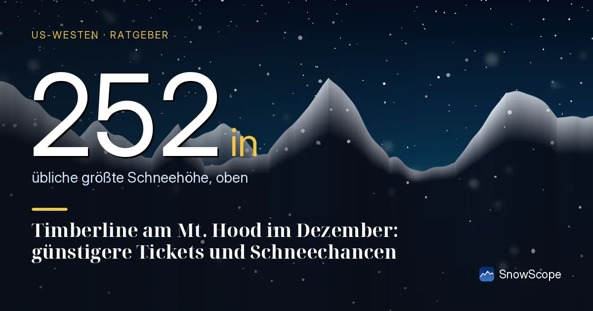

Timberline am Mt. Hood im Dezember: günstigere Tickets und Schneechancen
Timberline Lodge Ski Area liegt auf Oregons höchstem Vulkan mit Schnee, der deutlich zunimmt, je höher man fährt. Mitte Berg bietet im Dezember zuverlässiges Powder, und Nachmittags-Tickets in der Nebensaison kosten fast die Hälfte weniger als an Spitzentagen.
Die Live-Schneeprognose für Timberline Lodge Ski Area in der SnowScope-AppSchneehöhen, Pulverschnee-Alarme und 3D-Karte, gratis.
Höhe macht den Unterschied im frühen Winter
Timberline erstreckt sich über 1.372 m Höhendifferenz an der Südseite des Mt. Hood. Das Tal auf 1.214 m liegt im Dezember in einer Grenzzone für Schneefall, doch die Fahrt nach oben ändert alles. Bei Mitte Berg auf 1.900 m erreichst du die zuverlässige Saison; oben auf 2.586 m ist Schnee fast immer vorhanden.
Am 15. Dezember sind typische Tiefen 42 cm im Tal, 132 cm Mitte Berg und 147 cm oben. In 1 von 10 vergangenen Wintern war das Tal schneefrei, während der obere Berg gut zum Fahren war. Deshalb hat Timberline 12 Lifte: Sie ermöglichen es dir, den unteren Bereich zu überspringen und das obere Gelände zu nutzen.

Wann kaufen: vier Ticketpreise
Timberlines Preisgestaltung 2026–27 hat klare Nebensaison- und Spitzentarife. Eine Tageskarte für Erwachsene (19–64 Jahre) kostet 129 USD in der Nebensaison oder 161 USD an Spitzentagen. Ein Nachmittags-Ticket von Mittag bis Feierabend kostet 96 USD in der Nebensaison oder 124 USD an Spitzentagen. Spitzentage umfassen alle Wochenenden und 21. Dezember bis 1. Januar.
Die günstigste Option ist ein Nachmittags-Ticket in der Nebensaison Anfang Dezember für 96 USD. Ein Wochentag-Ticket Anfang des Monats kostet 129 USD. Wenn du in der Feiertagswoche fahren musst (21. Dez–1. Jan), rechne mit 161 USD für einen Ganztag oder 124 USD für den Nachmittag. Wochentage Mitte Dezember bieten das beste Preis-Zuverlässigkeits-Verhältnis.

Wie oft hat Mitte Berg guten Schnee?
Auf 1.900 m tritt guter Schnee (Wochenmittel von 50 cm oder mehr) in 76 % der Winter in der ersten Dezemberwoche auf, 74 % in der zweiten Woche und 85 % in jeder der beiden Wochen vor Neujahr. Diese Chancen verbessern sich mit fortschreitender Saison.
Die Spanne zwischen guten und schwachen Wintern ist groß. Am 15. Dezember hatte einer von zehn Wintern nur 26 cm Schnee Mitte Berg, während einer von zehn 281 cm hatte. Die letzte Saison war an diesem Datum bemerkenswert schwach – der Berg hatte keinen Schnee – das kann also vorkommen. Die oberen Hänge bleiben zuverlässiger: Am 15. Dezember hatten 80 % der Winter 50 cm oder mehr oben.
Vergleich mit White Pass und Mt. Bachelor
White Pass in Washington, 60 Meilen nördlich, verkauft online ab 69 USD in der Nebensaison bis 119 USD an Spitzentagen. Seine Mitte-Berg-Typtiefe am 15. Dezember beträgt 102 cm, mit gutem Schnee in 87 % der Winter. Mt. Bachelor bei Bend, Oregon, liegt höher und erhält mehr Schnee: 139 cm an einem typischen 15. Dezember, gut in 83 % der Winter.
Timberlines Mitte Berg mit 132 cm am 15. Dezember liegt zwischen ihnen in der Schneemenge. Für reinen Dezemberschnee führt Mt. Bachelor leicht, aber Timberline unterbietet beide bei Ticket-Kosten, wenn du Wochentage früh im Monat in der Nebensaison buchst. White Pass gewinnt beim Preis, wenn du lange im Voraus kaufst.
Was die oberen Hänge zeigen
Die Spitze von Timberline auf 2.586 m ist, wo die Dezember-Schnee-Zuverlässigkeit sehr hoch wird. Am 15. Dezember beträgt die typische Tiefe 147 cm, und guter Schnee tritt in 80 % der Winter auf. Am Weihnachtstag erreicht die typische Tiefe 185 cm, und am Silvesterabend 228 cm.
In einem schwachen Winter (einer von zehn) hatte selbst die Spitze am 15. Dezember nur 103 cm. In einem großen Winter erreichte die Spitze 310 cm. Wenn du die oberen Hänge fährst und die unteren Lifte meidest, ist Mitte Dezember und später sehr zuverlässig.
Deine Reise planen
Buche einen Nachmittag in der Nebensaison in den ersten drei Dezemberwochen, um niedrige Kosten und gute Chancen zu verbinden. Fahre mit den Hochgeschwindigkeitslift direkt Mitte Berg oder nach oben; ignoriere das Tal in der frühen Saison. In der Weihnachtswoche hat der gesamte Berg auf allen Höhen zuverlässigen Schnee, aber erwartet Spitzenpreise und Menschenmengen.
US-26 von Portland führt zu Government Camp auf etwa 1.829 m; Schneeketten können erforderlich sein, auch wenn der Skibereich offen ist. Prüfe die Straßenprognose vor deiner Abfahrt. Die Schneetiefenkarte zeigt dir, ob dieser Dezember ein großer oder schwacher Schneefall ist, und du kannst deine Höhenstrategie dementsprechend planen.
Tipps für Skifahrer
- Fahre einen Wochentag-Nachmittag in den ersten zwei Dezemberwochen zum 96-USD-Nebensaison-Tarif; der obere Berg hat gute Schnee-Chancen und du vermeidest Feiertagsmenschenmengen.
- Starten Sie Ihren Tag Mitte Berg oder oben – die unteren Lifte bedienen dünnen Schnee im Dezember. Spart die unteren Abfahrten für späte Saison.
- Erwarte einen Winter von zehn, der sehr schwach am Tal beginnt. Wenn du mit freiem Boden ankommst, fahre auf 1.900 m oder höher, wo Schnee zuverlässiger ist.
- Trage Schneeketten und prüfe die Straßenbedingungen auf US-26 vor der Fahrt von Portland; Government Camp liegt auf 1.829 m und Schnee dort ist im Dezember üblich.
- Konsultiere die SnowScope-Tiefenkarte in der Woche vor deiner Reise, um zu sehen, ob dieser Dezember als großer oder schwacher Schneefall verläuft; die Spanne ist groß.
Zu diesen Zahlen
Die Schneehöhen der Skigebiete sind der meiste Schnee in den oberen Hängen am angegebenen Tag; es sind Schätzungen für eine Fläche, keine Messung an einem Punkt. Prognosen können sich ändern. Lies vor dem Freeriden immer den offiziellen Lawinenlagebericht.
Offizielle Lawinenlageberichte: avalanche.org (US national portal)
Diesen Bericht zitieren
Für Forschung, Lehre oder Presse: Zahlen und Grafiken sind unter CC BY 4.0 mit dieser Quellenangabe frei nutzbar.
SnowScope (2026), Timberline am Mt. Hood im Dezember: günstigere Tickets und Schneechancen, https://snowscope.app/blog/de/2026/11/timberline-mt-hood-december-ski-on-a-budget.html, abgerufen am 2026-11-15
SnowScope (Atlas Labs). (2026, November 15). Timberline am Mt. Hood im Dezember: günstigere Tickets und Schneechancen. SnowScope snow reports. https://snowscope.app/blog/de/2026/11/timberline-mt-hood-december-ski-on-a-budget.html
BibTeX
@misc{snowscope2026timberlinemthooddecember,
author = {{SnowScope (Atlas Labs)}},
title = {Timberline am Mt. Hood im Dezember: günstigere Tickets und Schneechancen},
year = {2026},
month = nov,
howpublished = {\url{https://snowscope.app/blog/de/2026/11/timberline-mt-hood-december-ski-on-a-budget.html}},
note = {Published 2026-11-15 09:34 UTC; accessed 2026-11-15}
}· CC BY 4.0 · Methoden, Daten und Werkzeuge →
Timberline Lodge Ski Area: Schnee und Temperatur nach Höhe, dieser Winter vs letzter (Werkzeuge) →
Timberline Lodge Ski Area folgen
Gratis: eine Nachricht, wenn Neuschnee kommt, und jeden Morgen die Vorhersage.